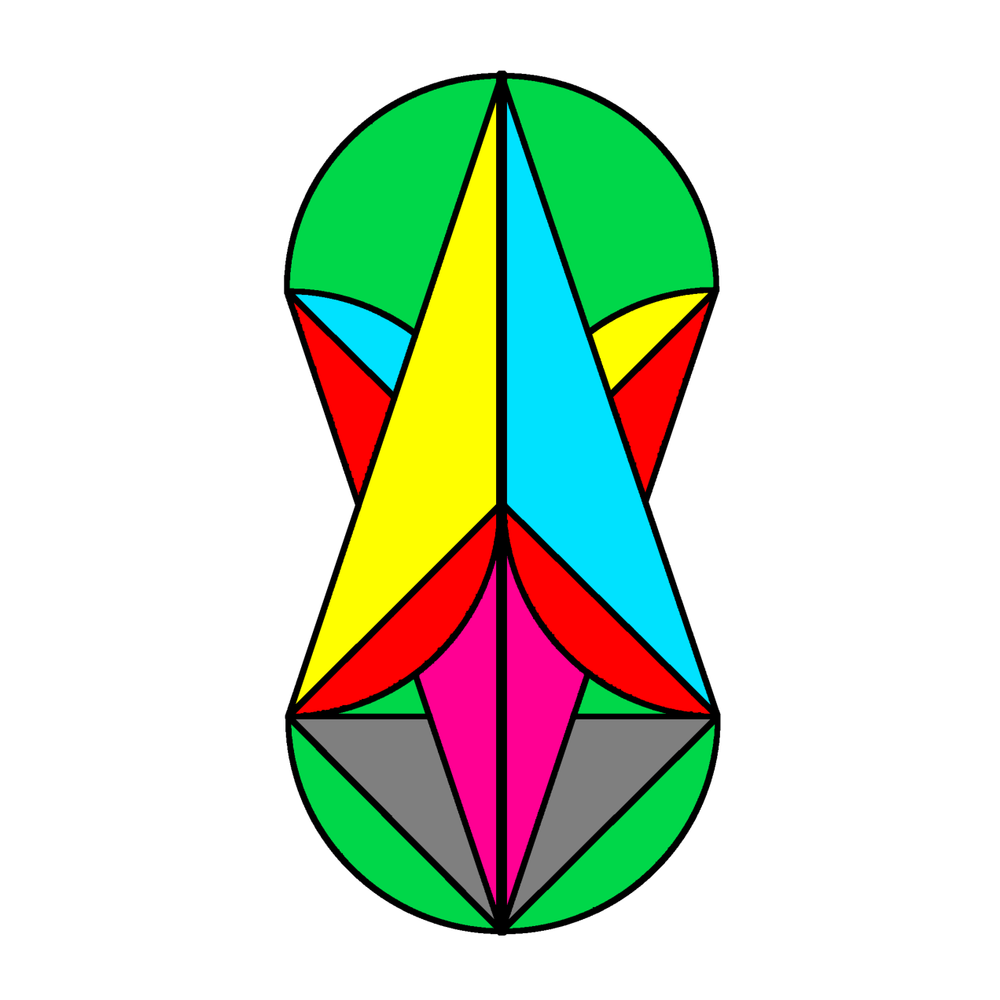

Welcome to my personal Webpage!
Hello! My name is Anastasios (Tassos) Fragkos and I'm a postgraduate student of Pure Mathematics in NKUA. Here you can mainly find:
- In the "Home" tab, things I'm working on or currently studying.
- In the "Notes and Books" tab, lecture notes or books that I have written, as well as some recomendations of others' material. I will try to upload some of the LaTeX templates I'm using.
- In the "News and Seminars" tab, a list of Seminars or Conferences that are taking place, mainly in Greece.
- Interested in Elliptic Systems of Phase Transition Type.
- Co-organising the "Mathematics Group" in NKUA (see bellow).

Χωρὶς τὴ μαθηματικὴ τάξη, δὲν στέκει τίποτε: Οὔτε οὐρανὸς ἔναστρος, οὔτε ρόδο. Προπαντὸς ἕνα ποίημα. Κι εὐτυχῶς ὅτι μ᾿ ἔκανε ἡ μοῖρα μου γνώστη τῶν μουσικῶν ἀριθμῶν ὅτι κρέμασε μίαν ἀχτίνα ἐπὶ πλέον τὸ ἄστρο τῆς ἡμέρας στὴν ὅρασή μου καὶ κάνοντας τὰ γόνατά μου τραπέζι ἐργάζομαι, ὡς νά ῾ταν νὰ φτιάξω ἕναν ἔναστρο οὐρανό, ἢ ἕνα ρόδο.
Νικηφόρος Βρεττάκος.
Mathematics Group will continue this semester too! We are looking forward to seeing you there!
This semester organisation committee: Giannis Oikonomidis, Chrysoula Tsismentzoglou, Kostas Bizanos and Nikoleta Sevastou and me.
The purpose of this mathematics group (which will be organized for the first time in the winter semester of 2024-25), is to get in touch with mathematical subjects that are not taught, or are no longer taught, in our department in NKUA. It is mainly aimed for postgraduate students, but undergraduate students, members of the university or generally anyone else who is interested, are also welcome. The idea is that every week students make two presentations on topics of their interest. Topics may change each month to provide variety (the length of each topic will vary between one (1) and three (3) presentations).
This semester organisation committee: Giannis Oikonomidis, Chrysoula Tsismentzoglou, Kostas Bizanos, Vagelis Katsantonis and me.

Hosting service: Github